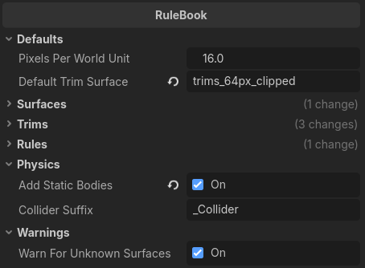
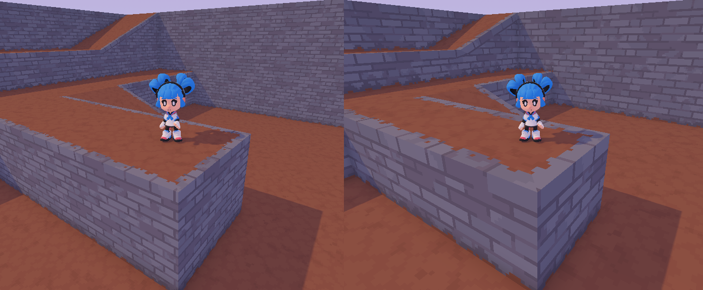

Rulebook
In AutoTrimmer, all of the rules and settings are stored in (what I call) a “rulebook”. A rulebook contains absolutely everything that AutoTrimmer needs to know:
Besides those things, which each have their own separate pages in the documentation, a rulebook also has some general settings. Those general settings are explained on this page.

Defaults
Pixels per world unit (optional but highly recommended)
For the textures, how many pixels wide is a world unit? In Godot, this is essentially pixels per meter.
Pixels per world unit is used to calculate how big your textures and trims are in the world. For example, if you have a trim that's 8 pixels tall on the texture, and "pixels per world unit" is set to 16, the generated trim will be 0.5 world units tall (so half the width of a grid square).*
World unit explained: The term “world unit” refers to the width of one square in the world's coordinate grid. In Godot and most other 3D software, a world unit is a meter by convention. The exception is Unreal Engine, where a world unit is a centimeter by convention. That being said, a world unit doesn't have to correspond to a real-world size. It can be as big or as small as you want it to be.
Below, you can see 16 pixels per world unit on the left, and 8 pixels per world unit on the right.

Default trim surface (optional but highly recommended)
The surface that will be used for all trims, unless the trim config specifies a surface override.
When using AutoTrimmer you'll probably find yourself using one trim sheet for almost all of your trims. Once you've set up your surfaces, you can fill in the name of the default trim surface here. All of your trims will use this surface unless you explicitly set them to use another one. This helps to make things a little more convenient.
The name in “default trim surface” must exactly match the Name of the surface.
Surface names are sensitive to capitals and spaces. For example, if your surface is called “brick” and you fill in “Brick” for this option, you'll get an error, because of the mismatch in the capital letter B.
Physics
Add static bodies
Automatically add physics nodes upon importing the 3D model.
In a game engine, a 3D model is just for looks. It's not a real landscape, just a fake, paperthin facimile of a landscape that doesn't do anything by itself. By default characters and objects will fall straight through it.
If you want characters to be able to walk on your models instead of falling straight through it, you don't just need the 3D model, you also need physics bodies. Physics bodies are used by the physics engine to simulate things like gravity and collisions.
For Godot, AutoTrimmer can automatically generate StaticBody3D nodes for you. A StaticBody3D is a physics body that never moves. It's the best choice for fixed (not moving) level geometry.
However, it's not a good choice for things like doors, which are supposed to move. If you're making levels with AutoTrimmer and you want to add doors and other interactive objects, it's better to add those in the game engine rather than trying to do it with AutoTrimmer.
AutoTrimmer will generate StaticBody3D nodes with a ConcavePolygonShape3D. This is the least efficient physics shape, but it can handle the greatest variety of shapes. As long as your 3D models are low poly, physics performance should stay pretty good.
Collider suffix
This suffix signifies that a mesh is a custom collision shape.
If you've made a staircase, it can happen that your character gets stuck on every step. One way to handle this is to make a more complex character controller that's built to handle things like stair steps properly. A much easier solution is to make the stairs act as if they're a ramp. Of course, we still want them to look like a staircase, but for physics, they should act like a ramp. We can do this by using one mesh for the graphics and another mesh for the physics.
By default, if “add static bodies” is enabled, you can add a mesh whose name ends with “_Collider” to the scene in Blender. Parent it to the mesh whose physics mesh you want it to replace. AutoTrimmer will then use the “_Collider” mesh for the physics body of the parent node. The “_Collider” mesh itself won't be visible.
You can use this option to change “_Collider” to something else if you want. If “add static bodies” is disabled, all “_Collider” meshes are ignored (they still won't be added to the graphics).
Warnings
Warn for unknown surfaces
Disables warnings for unrecognized materials in the 3D model.
When AutoTrimmer comes across a material in your 3D models that it doesn't recognize (it isn't mentioned in the surface list), you'll get a warning. This is because an unrecognized material might be a mistake. Maybe you gave it the wrong name in the 3D model?
However, AutoTrimmer can actually deal with unrecognized materials just fine. You only get a warning to make sure you didn't make a mistake. When a material is unrecognized, it will just leave those parts of the mesh exactly as they were, maybe adding trims onto it if any rules apply.
If you're getting warnings for unrecognized materials and you know it's harmless, there's two things you can do to get rid of the warnings:
- Add the material names to your list of surfaces. AutoTrimmer doesn't do anything to a surface unless you tell it to, so even if you want to leave a material's surface unchanged, you can still add it to the list.
- Disable this option. That way you won't have to add the surfaces to the list, and you won't get spammed with warnings. You also won't get a warning when you make a mistake, however.